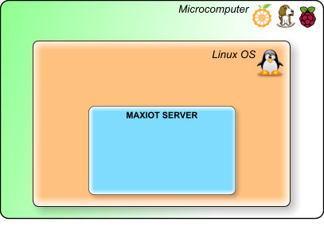

MAXIOT სისტემია¶
MAXIOT სისტემია ეს არის ინსტრუმენტი, რომლის საშუალებით ფიზიკური მოწყობილობები შემოგვყავს ვირტუალურ სამყაროში სადაც ასევე არსებობენ ვირტუალური მოწყობილობებიც. ასეთი ტრანსფორმაციის მიზანია მოწყობილობებს შორის მონაცემთა გაცვლის კავშირების მარტივი მენეჯმენტი. ვირტუალურ სამყაროში მოწყობილობები იღებენ და გამოცემენ მონაცემებს, საჭიროების შემთხვევაში ხდება მონაცემების ტრანსფორმაცი და მონაცემემბის ფიზიკური მოწყობილობის ავატართან დაბრუნებისას ხდება ამ მონაცემების რეალურ სამყაროში ასახვა.
სარჩევი
MAXIOT SERVER¶
MAXIOT SERVER-რი ეს არის MAXIOT სისტემის მთავარი ნაწილი, რომელიც ახორციელებს საგნების ინტერნეტის სერვერის ყველა აუცილებელ ფუნქციებს. MAXIOT SERVER-რის აპლიკაცია დაწერილია C ენის გამოყენებით და სამუშაო გარემოს წარმოადგენს ლინუქსის ოპერაციული სისტემა. სერვერის შეიძლება დაკომპილირდეს როგორც ARM ასევე x86 არქიტეკტურის ქვეშ, შესაბამისად სერვერი დაინსტალირება შესაძლებელია პრატიკულად ნებიმიერი მიკროკომპიუტერის ან ვირტუალური კომპიუტერის პლათფორმებზე. MAXIOT SERVER-რი ოპტიმიზირებულია იმისთვის , რომ რაც შეიძლება ოპტიმიალურად გამოიყენოს კომპიუტერის პროცესორის რესურსები და ოპერატიული მეხსიერება.
{kind=link}
MAXIOT STUDIO¶
MAXIOT სისტემის სერვერის მართვის,პროგრაიმრების აპლიკაცია
MAXIOT STUDIO აპლიკაციის პლათფორმა¶
(ოპრრაციული სისტემა, ვებ ბროუზერი)
STUDIO კომპონენტებთან მუშაობა¶
კომპონენტების - სისტემაში დამატება¶
(ავატარის დამატება)